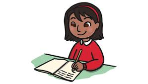
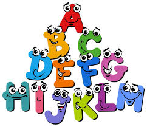

Descubre, Juega y Aprende
Bienvenido a la plataforma educativa donde la curiosidad no tiene límites. Explora el mundo de las matemáticas, la lectura y las ciencias a través de juegos interactivos y divertidos laboratorios.
Explorar Ahora
Bienvenido a la plataforma educativa donde la curiosidad no tiene límites. Explora el mundo de las matemáticas, la lectura y las ciencias a través de juegos interactivos y divertidos laboratorios.
Explorar Ahora
¡Bienvenido al mundo mágico del español! Aquí aprenderás a leer, escribir, jugar con palabras y descubrirás secretos divertidos del idioma.
El español es la llave para comunicarte, imaginar, crear historias y entender el mundo. ¡Vamos a descubrirlo juntos!



Había una vez un gato llamado Tomás que amaba saltar de tejado en tejado. Un día, vio una mariposa y decidió seguirla. Saltó tan alto que casi tocó el cielo. Al final, la mariposa se posó en su nariz y Tomás aprendió que a veces lo mejor es disfrutar el momento.
Descubre datos asombrosos sobre el idioma, la escritura y la literatura.
Selecciona el sinónimo de la palabra feliz:
El abecedario español tiene 27 letras. ¿Sabes cuál es la letra más usada? ¡La letra "E"!

La tilde es como un sombrero mágico que cambia el sonido y el significado de las palabras.

El libro más traducido después de la Biblia es "El Principito", ¡y fue escrito en francés!

Lee historias de dragones amigables, princesas valientes y animales que hablan. ¡La aventura te espera!
Leer Cuentos¿Qué entendiste de la historia? Responde preguntas divertidas y demuestra que eres un gran detective de libros.
Hacer TestAprende palabras nuevas todos los días y descubre cómo se escriben correctamente sin aburrirte.
Ordenar PalabrasUne las palabras correctas para formar frases divertidas. El perro azul... ¿vuela en avión?
Armar FrasesConoce a los personajes principales de cada fábula y aprende sobre sus valores y emociones.
Ver PersonajesTodos los cuentos e historias mágicas que lees tienen tres partes muy importantes, ¡como si fuera una hamburguesa literaria!
Aquí nos presentan a los personajes. Por ejemplo: "Había una vez un osito muy dormilón llamado Tobby..."
Es donde ocurre el problema o la aventura. "...Un día, Tobby perdió su manta mágica en el bosque encantado."
Es el final, donde todo se resuelve. "...Y gracias a su amigo el conejo, la encontró y durmieron felices."

Las fábulas son historias cortitas donde los animales hablan y siempre nos dejan una moraleja (una enseñanza buena).

Saber escribir bien te da el poder de comunicarte con todo el mundo. ¡Una simple coma puede cambiar todo el sentido de una frase!
Completa la frase: "El león corre muy _________ por la selva."

Conviértete en un autor famoso. En este espacio, tú eres quien crea la historia y decide cómo termina el cuento.
Descubre datos asombrosos sobre animales, plantas, ciencia y matemáticas que te dejarán con la boca abierta.